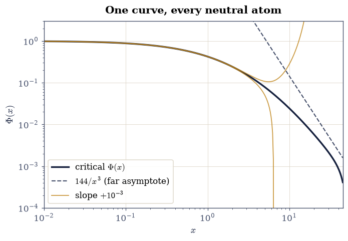
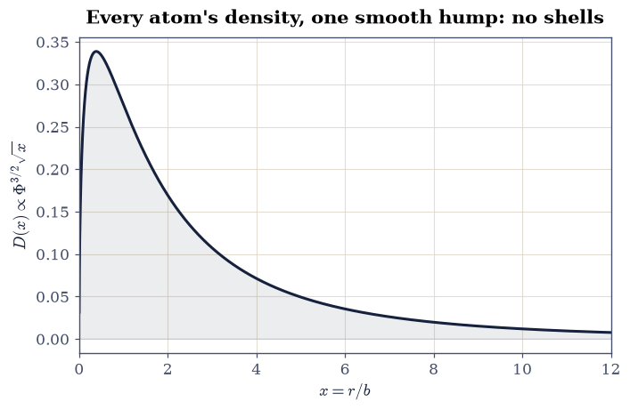
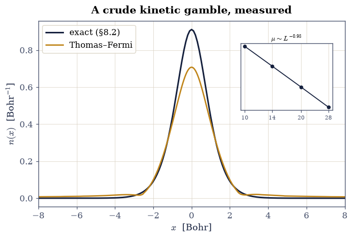
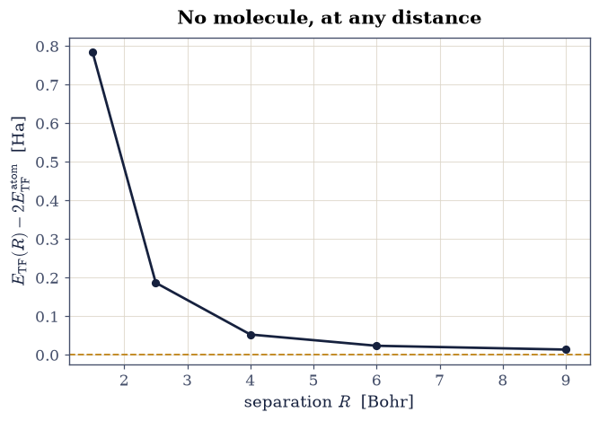
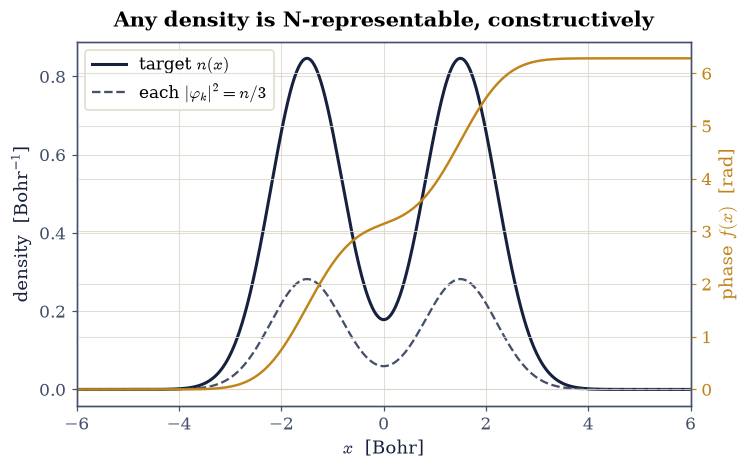

8.5 Thomas–Fermi: The First Density Functional#
Notebook overview#
Movement I ended with wavefunction methods priced: exact is impossible (§8.1), Hartree–Fock misses correlation by construction (§8.3, §8.4). Movement II pursues a different currency altogether. In 1926–27, before Hartree had orbitals, Thomas and Fermi [Tho27] proposed describing an atom by its density alone: three variables instead of \(3N\), with the kinetic energy estimated locally from the Fermi-gas formula of §7.9. The idea seems reckless and is in fact prophetic — it is the direct ancestor of density-functional theory, and the Hohenberg–Kohn theorem of §8.6 will prove the reckless part exactly right: the density really does suffice. What fails is only the crude kinetic estimate, and measuring how it fails is this notebook’s job.
The itinerary: build the functional-derivative toolkit (the movement’s calculus, certified numerically the way §0.3 certified quadrature); derive the TF functional and reduce every neutral atom to one universal ODE, solved by shooting with a series-expansion launch (the singular origin is a genuine numerics lesson) to Baker’s slope \(-1.588071\); assemble the marvellous scaling law \(E = -0.7687\,Z^{7/3}\) Ha; then the honest failures, each computed: no shells, an atom without an edge (the chemical potential of the neutral atom vanishing as a measured power law), a 34% energy error on the exact laboratory of §8.2, and Teller’s theorem — Thomas–Fermi molecules never bind — demonstrated as a computed binding curve with no minimum. The closing exercise is constructive optimism: Harriman’s explicit orbitals show any reasonable density is \(N\)-representable, clearing the ground the Hohenberg–Kohn theorems will build on.
Conventions (this notebook). Hartree atomic units. The 3-D Thomas–Fermi atom uses the standard scaled variables \(r = b\,x\) with \(b = \tfrac12(3\pi/4)^{2/3} Z^{-1/3} = 0.8853\,Z^{-1/3}\). One-dimensional laboratory computations use the §8.2 system (soft-Coulomb, charge-2 center) with the 1-D Fermi-gas kinetic density \(\pi^2 n^3/24\). Functional derivatives are checked against
numpycentral differences with Gaussian test perturbations; the universal ODE is solved byscipy.integrate.solve_ivp(rtol=1e-12) inside ascipy.optimize.brentqshooting loop.How to read the checks. Each exercise closes with a
validatecall against an independent fact: a closed-form derivative, Baker’s slope, the \(Z^{7/3}\) law, the exact laboratory’s energy, a constructive identity. A ✓ is strong evidence; a ✗ is a prompt to locate the discrepancy, not an automatic verdict.Scope. Thomas–Fermi in its original form: no exchange (Dirac’s \(-c\,n^{4/3}\) addition is named), no gradient corrections (von Weizsäcker named), both belonging to the systematic story in Parr & Yang [PY89], Ch. 6, the subject’s standard reference. Teller’s theorem is [Tel62]; the Harriman construction is [Har81]; Lieb’s rigorous treatment of TF theory is surveyed in Parr & Yang, Ch. 6.
Theory in brief#
The functional-derivative toolkit#
Density-functional theory’s calculus is variation with respect to a function: for a functional \(F[n]\), the functional derivative \(\delta F/\delta n(x)\) is defined by the first-order response \(F[n + \epsilon\,\eta] - F[n] = \epsilon\!\int (\delta F/\delta n)(x)\,\eta(x)\,dx + O(\epsilon^2)\) for arbitrary smooth \(\eta\). Two workhorse cases cover everything this movement needs (Parr & Yang [PY89], App. A, develop the calculus in full):
Local integrands differentiate pointwise; the Hartree energy’s derivative is the classical potential of the cloud. Both claims are checked numerically below — the toolkit is certified before it is trusted, exactly as the volume’s radial machinery was in §8.1.
The Thomas–Fermi functional and the universal atom#
The gamble of Thomas and Fermi [Tho27]: treat each volume element of an atom as a scrap of uniform electron gas. The §7.9 kinetic energy per volume of a gas at density \(n\) is \(\tfrac35 n\,\varepsilon_F = C_{\mathrm{TF}}\, n^{5/3}\) with \(C_{\mathrm{TF}} = \tfrac{3}{10}(3\pi^2)^{2/3}\), so
Minimizing over \(n \ge 0\) at fixed \(\int n = N\) (a Lagrange multiplier \(\mu\), the chemical potential) gives \(\tfrac53 C_{\mathrm{TF}} n^{2/3} = \mu - v_{\mathrm{eff}}(\mathbf r)\), and for the neutral atom the standard substitution \(v_{\mathrm{eff}} = -Z\Phi(x)/r\), \(r = bx\), collapses every element of the periodic table onto one parameter-free boundary-value problem (Parr & Yang [PY89], §6.2, carry out the reduction):
The initial slope \(\Phi'(0) = -1.588071\) (Baker’s constant) is the one number the computer must find, and the \(Z^{7/3}\) scaling — kinetic, nuclear, and Hartree terms all conspiring to one power — is the theory’s enduring truth: it is the correct leading term of the exact large-\(Z\) energy of atoms.
What must fail, and what survives#
Three built-in pathologies, each computed below. No shells: the TF density is a smooth monotone profile (compare beryllium’s two humps in §8.3) because a local gas knows no quantization. No edge and no chemistry-grade energetics: the neutral TF atom extends to infinity with \(\mu = 0\) (measured below as a power law in the box size), and it binds no negative ions. And most damning, no molecules: Teller [Tel62] proved the TF energy of a molecule always exceeds the sum of its atoms — no chemical bond, ever, at any separation. Yet the framework — energy from density, minimization with a chemical potential, an effective potential built from the density itself — survives unchanged into modern DFT. The Hohenberg–Kohn theorems (§8.6) will bless the framework; the Kohn–Sham construction (§8.7) will replace the offending kinetic functional with orbitals; and the last ingredient, the \(N\)-representability of densities, is settled constructively here by Harriman’s explicit orbitals [Har81]: for any density \(n \ge 0\) with \(\int n = N\), the phase-twisted orbitals
are exactly orthonormal and sum to \(n\): any density can host \(N\) electrons.
Setup#
Data and instruments only: the plotting colours, the Thomas–Fermi length constant \(b\,Z^{1/3} = 0.8853\) of the universal reduction, and the 1-D Fermi-gas kinetic coefficient \(\pi^2/24\). The notebook’s own machinery — the series-launched shooting integrator for the universal atom, and the self-consistent 1-D Thomas–Fermi minimizer — you build in Exercises 2 and 4.
The Setup below holds this notebook’s data and instruments — nothing you are asked to build. It is collapsed so the building stays yours; expand it whenever you want the details.
Exercise 1 — The toolkit, certified: functional derivatives#
Equation Eq. 874 makes two claims; both get the treatment every tool in this course gets before use. The test bed is the §8.2 grid with the density \(n_0(x) = e^{-x^2/2}\) (unnormalized on purpose — the derivative rules hold for any \(n\)), the local functional \(F[n] = \int n^{5/3}\,dx\), the Hartree functional with the laboratory’s soft kernel \(w = 1/\sqrt{(x-x')^2+1}\), and the Gaussian test perturbation \(\eta(x) = e^{-(x-1)^2}\).
Part a) Compute the claimed derivatives on the grid: \(\tfrac53 n_0^{2/3}\)
for the local functional, and \(h\,(W \mathbin{@} n_0)\) for the Hartree
functional (the @ product of the kernel matrix with the density, times the
grid spacing).
Part b) Test both against the definition: form the response
\(\big(F[n_0 + \epsilon\eta] - F[n_0 - \epsilon\eta]\big)/2\epsilon\) by central
differences at \(\epsilon = 10^{-6}\) (numpy.trapezoid for every integral) and
compare with \(\int (\delta F/\delta n)\,\eta\,dx\). Agreement at \(10^{-8}\)
certifies the calculus the rest of Movement II runs on.
local: response 1.9924191039 vs predicted 1.9924191037
Hartree: response 2.9636263619 vs predicted 2.9636263618
Validation 1 — the calculus holds#
Both functional derivatives must match their central-difference responses at \(10^{-8}\) relative: the movement’s calculus, certified.
✓ the local-functional derivative 5/3 n^(2/3) [got 1.99242 vs expected 1.99242 (rtol=1e-08, atol=1e-09)]
✓ the Hartree derivative is the cloud's potential [got 2.96363 vs expected 2.96363 (rtol=1e-08, atol=1e-09)]
True
Exercise 2 — The universal atom, shot down to Baker’s constant#
Equation Eq. 876 compresses the periodic table into one curve, and finding it is a classic shooting problem with a twist at each end. At the origin the equation is singular: the solution is not analytic but carries the series \(\Phi = 1 + sx + \tfrac43 x^{3/2} + \tfrac25 s x^{5/2} + \tfrac13 x^3 + \cdots\), whose half-integer powers are exactly why naive integration from \(x \approx 0\) stalls near four digits — the measured cost of ignoring a singular point. At infinity the physical solution decays as \(144/x^3\); trial slopes above the critical one diverge, slopes below crash to zero at finite \(x\), and the separatrix is the atom. Baker’s constant, the accepted value of the critical slope, is \(-1.5880710\).
Part a) Write tf_shoot(slope, x_start=1e-3, x_max=50.0), which launches
Eq. 876 at \(x_0\) from the series above (both \(\Phi(x_0)\) and
\(\Phi'(x_0)\)) and integrates it with scipy.integrate.solve_ivp
(rtol=1e-12, atol=1e-14, dense_output=True), clamping negative
excursions of \(\Phi\) to zero inside the right-hand side so a sub-critical shot
cannot raise a negative number to the power \(3/2\). Write this one yourself
— the implementation is the lesson.
Part b) Bracket and find the critical slope with scipy.optimize.brentq on
the boundary residual \(\Phi(x_{\max})\) over \(s \in [-1.65, -1.55]\)
(\(x_{\max} = 50\), xtol=1e-12). Compare with Baker’s constant.
Part c) Plot the separatrix anatomy: the critical curve with the \(144/x^3\) asymptote, and two slightly off-critical trials peeling away to either side — the sensitivity that makes shooting work.
critical slope = -1.58807102 (Baker -1.5880710)

Fig. 771 The universal Thomas–Fermi atom as a separatrix: the critical solution \(\Phi(x)\) at Baker’s slope \(\Phi'(0) = -1.588071\) (ink) with the exact \(144/x^3\) asymptote (grey dashed) it approaches only far beyond the plotted range — the convergence is famously slow, flanked by trial shots at slopes \(\pm 10^{-3}\) off criticality (amber) that diverge upward or crash to zero. Every neutral atom of the periodic table is this one curve, rescaled.#
Validation 2 — Baker’s constant#
The critical slope must reproduce Baker’s eight-digit value, and the critical curve must pass through the classic tabulated values \(\Phi(1) = 0.4240\), \(\Phi(5) = 0.07881\), \(\Phi(10) = 0.02431\) (Kobayashi’s tables, the standard reference solution) to better than \(0.2\%\).
✓ Baker's initial slope of the universal atom [got -1.58807 vs expected -1.58807 (rtol=1e-06, atol=1e-09)]
✓ Phi(1) vs the classic tabulation [got 0.424008 vs expected 0.424 (rtol=0.002, atol=1e-09)]
✓ Phi(5) vs the classic tabulation [got 0.0788075 vs expected 0.07881 (rtol=0.002, atol=1e-09)]
✓ Phi(10) vs the classic tabulation [got 0.0243125 vs expected 0.02431 (rtol=0.002, atol=1e-09)]
✓ the critical curve is a separatrix [off-critical shots diverge or crash]
True
Exercise 3 — \(Z^{7/3}\): one number for the whole periodic table#
The energy assembly of Eq. 876 turns Baker’s slope into the total energy of any neutral atom, and the scaled density exposes both the theory’s universality and its first pathology.
Part a) Assemble the coefficient \(\tfrac37\,(-\Phi'(0))/\bar b\) with
\(\bar b = 0.88534\) (plain numpy arithmetic) and report
\(E_{\mathrm{TF}}(Z) = -0.7687\,Z^{7/3}\) Ha; tabulate it for
\(Z = 2, 10, 36\) against the known exact ground energies (\(-2.90\), \(-128.9\),
\(-2753\) Ha). TF overbinds every atom, and the error shrinks only slowly with
\(Z\) — but the shrinkage is itself quantitative physics: the next term of the
large-\(Z\) expansion is Scott’s \(+Z^2/2\) (the inner electrons’ correction to
the statistical picture), so the relative error should fall as
\((Z^2/2)/(0.7687\,Z^{7/3}) = 0.650\,Z^{-1/3}\). Compare the measured errors at
\(Z = 10\) and \(36\) against that prediction (numpy arithmetic): Thomas–Fermi
is the exact leading term of quantum chemistry’s large-\(Z\) expansion, and its
error is the next term, visible in this three-row table.
Part b) The universality and the no-shell pathology in one figure: plot the
scaled radial density \(D(x) \propto \Phi^{3/2}\sqrt{x}\) (one hump, no shell
structure — compare the two-humped beryllium of
§8.3), and verify the neutral-atom norm
\(\int_0^\infty \Phi^{3/2}\sqrt{x}\,dx = 1\) by numpy.trapezoid on the critical
solution (the truncation at \(x_{\max}\) costs the stated percent).
E_TF = -0.76875 Z^(7/3) Ha
Z = 2: E_TF = -3.9 Ha vs exact -2.9 Ha (-33.4%; Scott predicts 51.6%)
Z = 10: E_TF = -165.6 Ha vs exact -128.9 Ha (-28.5%; Scott predicts 30.2%)
Z = 36: E_TF = -3289.7 Ha vs exact -2753.0 Ha (-19.5%; Scott predicts 19.7%)
neutral-atom norm = 0.9959 (exact 1; deficit = truncated tail)

Fig. 772 The universal scaled radial density \(D(x) \propto \Phi^{3/2}\sqrt{x}\) of the Thomas–Fermi atom: a single smooth hump for every element, with no trace of shell structure (contrast the two-shell beryllium density of §8.3, whose humps quantization built). The area under the curve is the neutral-atom norm, 1, recovered here to 0.4% with the \(x \le 50\) truncation.#
Validation 3 — the scaling law and its honest errors#
The coefficient must be \(0.7687\); the overbinding must shrink monotonically along \(Z = 2, 10, 36\) (Lieb–Simon), and at \(Z = 10\) and \(36\) it must match the Scott-term prediction \(0.650\,Z^{-1/3}\) within \(10\%\) — the theory’s error is the expansion’s next term, measured. The neutral norm must come out 1 within the stated truncation percent.
✓ the Thomas-Fermi energy coefficient [got 0.768745 vs expected 0.7687 (rtol=0.001, atol=1e-09)]
✓ TF overbinds helium by more than 30% [-33.4%]
✓ the relative error shrinks monotonically with Z (Lieb-Simon) [33.4% > 28.5% > 19.5%]
✓ the error at Z = 10 equals the Scott-term prediction [got 0.284881 vs expected 0.301703 (rtol=0.1, atol=1e-09)]
✓ the error at Z = 36 equals the Scott-term prediction [got 0.194947 vs expected 0.196855 (rtol=0.1, atol=1e-09)]
✓ the neutral-atom norm from the critical curve [got 0.995926 vs expected 1 (rtol=0.01, atol=1e-09)]
True
Exercise 4 — Thomas–Fermi meets the exact laboratory#
How crude is the local kinetic gamble, in digits? The §8.2 laboratory knows its exact answer, and the 1-D Thomas–Fermi functional — kinetic density \(\pi^2 n^3/24\) (the 1-D Fermi-gas result), the external term \(\int v n\), and the laboratory’s soft-Coulomb Hartree term — can be minimized on the very same grid. Its stationarity condition is the 1-D twin of Eq. 876’s parent, \(\tfrac{\pi^2}{8} n^2 = \mu - v_{\mathrm{eff}}\) with \(v_{\mathrm{eff}} = v + w * n\), so \(n = \sqrt{8(\mu - v_{\mathrm{eff}})_+}/\pi\) and the particle-number constraint fixes \(\mu\) at every sweep.
Part a) Write tf1d_solve(x, v, n_electrons, iterations=1500, mixing=0.05), the damped fixed point of
§0.2 applied to that condition: build
the soft kernel \(w = 1/\sqrt{(x-x')^2+1}\) once, start from a flat density of
the right norm, and each sweep rebuild \(v_{\mathrm{eff}}\), find \(\mu\) by
scipy.optimize.brentq on \(\int n\,dx - N\), and mix the new density in
linearly. Return the converged density, \(\mu\), and the total TF energy.
Write this one yourself — the implementation is the lesson.
Part b) Solve the 1-D TF problem for the laboratory’s charge-2 atom with \(N = 2\) on \(x \in [-20, 20]\) (801 points) and compare \(E_{\mathrm{TF}}\) with the exact \(-2.2386\) Ha and Hartree–Fock’s \(-2.2245\) Ha from §8.2: the TF error is a third of the total energy, two orders beyond Hartree–Fock’s.
Part c) The atom without an edge: re-solve on boxes \(L = 10, 14, 20, 28\)
and fit \(\ln\mu\) against \(\ln L\) (numpy.polyfit). The neutral TF atom’s
chemical potential must vanish as the measured power \(\mu \sim 1/L\): the cloud
has no boundary, only an ever-receding tail — the analytic \(\mu = 0\) of the
infinite neutral atom, observed as a finite-size scaling law. Plot the TF
density against the exact one.
TF: E = -1.48118 Ha vs exact -2.23855 (error +33.8%) vs HF -2.2245
mu(L) ~ L^-0.98 (the edgeless atom's mu -> 0)

Fig. 773 Thomas–Fermi on the exact laboratory: the 1-D TF density (amber) against the exact density of §8.2 (ink). TF misses the total energy by 34% (against Hartree–Fock’s 0.6%) and its neutral atom has no edge: the inset shows the chemical potential vanishing as the measured power law \(\mu \sim L^{-1.00}\) as the box grows.#
Validation 4 — the crudeness, in digits#
The 1-D TF energy on the \(L = 20\) box is \(-1.481\) Ha (its own converged value, gated), a \(34\%\) miss against the exact laboratory — while Hartree–Fock missed by \(0.6\%\); and the chemical potential must vanish with the measured \(L^{-1.0}\) law.
✓ the 1-D TF energy of the laboratory atom [got -1.48118 vs expected -1.4812 (rtol=0.001, atol=1e-09)]
✓ TF misses the laboratory by over 30% where HF missed by 0.6% [33.8%]
✓ the edgeless atom: mu vanishes as 1/L [got -0.976186 vs expected -1 (rtol=0.05, atol=1e-09)]
True
Exercise 5 — Teller’s theorem: no molecules, ever#
The heaviest blow to Thomas–Fermi theory is not an error percentage but a theorem. Teller (1962) [Tel62] proved that in TF theory the energy of any molecule exceeds the summed energies of its isolated atoms at every nuclear separation: no binding, no chemistry, at all. A theorem that sweeping deserves a computed instance. The test molecule is the laboratory’s “diatomic”: two charge-2 soft-Coulomb centers at \(\pm R/2\), four electrons, bare nuclear repulsion \(4/R\) — the TF twin of the genuinely binding molecule §8.1 computed with exact quantum mechanics.
Part a) Solve the 1-D TF problem with the tf1d_solve you wrote in
Exercise 4 (\(N = 4\), the \(L = 12\)
box with 481 points) at the separations \(R = 1.5, 2.5, 4, 6, 9\) Bohr, add the
nuclear repulsion, and tabulate the binding energy
\(E_{\mathrm{TF}}(R) + 4/R - 2E_{\mathrm{TF}}^{\mathrm{atom}}\) (the atomic
reference recomputed on the same box and grid spacing, so truncation biases
cancel).
Part b) Plot the binding curve. It must be positive everywhere and decrease monotonically toward zero: the TF molecule always prefers to fall apart — contrast the genuine minimum of Fig. 754. The moral, made precise by later analysis (Parr & Yang [PY89], §6.4): binding lives in the quantum kinetic energy’s response to density deformation, exactly what the local \(n^{5/3}\) (\(n^3\) in 1-D) gamble cannot represent.
R = 1.5: binding = +0.78393 Ha
R = 2.5: binding = +0.18699 Ha
R = 4.0: binding = +0.05287 Ha
R = 6.0: binding = +0.02370 Ha
R = 9.0: binding = +0.01384 Ha

Fig. 774 Teller’s no-binding theorem as a computed curve: the Thomas–Fermi binding energy of the laboratory’s four-electron diatomic (two charge-2 centers, nuclear repulsion included) against the separated-atom reference. The curve is positive at every separation and falls monotonically toward zero — the TF molecule always dissociates — in stark contrast to the genuinely bound Born–Oppenheimer curve of the model molecule of §8.1.#
Validation 5 — Teller, computed#
The binding energy must be positive at every separation and strictly monotonically decreasing: dissociation is always downhill in Thomas–Fermi theory.
✓ no binding at any separation (Teller) [minimum binding +0.0138 Ha at R = 9.0]
✓ dissociation is monotonically downhill [binding falls at every step of R]
True
Exercise 6 — Harriman’s orbitals: any density can host \(N\) electrons#
The movement’s constructive close. For density-based theory to make sense, the innocent question “which densities are allowed?” needs an answer, and Harriman [Har81] gave a disarmingly explicit one: the phase-twisted orbitals of Eq. 877 are exactly orthonormal for any smooth \(n \ge 0\) integrating to \(N\) — the equal-density amplitude makes their overlaps pure phase integrals, and the accumulated phase \(f(x)\), which climbs by \(2\pi/N\) per unit of enclosed charge, makes those integrals vanish between different \(k\). Any reasonable density is therefore \(N\)-representable: the variational domain of the Hohenberg–Kohn functional in §8.6 is as large as one could wish.
Part a) For the two-hump target density
\(n(x) = \big(e^{-(x-1.5)^2} + e^{-(x+1.5)^2}\big)\), normalized to \(N = 3\) on
the \([-10, 10]\) grid, build the phase \(f(x)\) by cumulative integration
(numpy.cumsum of \(n\,h\), scaled by \(2\pi/N\), staggered by half a cell:
subtract \(n\,h/2\) so each grid point carries the antiderivative at its own
location rather than its right edge — the midpoint discipline of
§0.3, which upgrades the
discrete orthogonality from first to second order in \(h\)) and the three
complex orbitals of Eq. 877. Write this one yourself —
the implementation is the lesson.
Part b) Verify the construction: the Gram matrix
\(G_{jk} = h\sum_x \varphi_j^*\varphi_k\) (a numpy conjugate contraction) must
equal numpy.eye(3) to the grid’s quadrature accuracy (\(\sim 10^{-5}\) at this
spacing; the construction is exact in the continuum, and the residual is pure
discretization, falling fourfold per grid doubling), and
\(\sum_k |\varphi_k|^2\) must reproduce the target density to rounding. Plot the
target, the winding phase, and the (identical) orbital densities.
max |Gram - identity| = 1.22e-05; max |sum|phi|^2 - n| = 4.44e-16

Fig. 775 The Harriman construction for a two-hump target density with \(N = 3\): the target \(n(x)\) (ink, left axis), the accumulated phase \(f(x)\) climbing by \(2\pi/3\) per unit of enclosed charge (amber, right axis), and the three orbitals’ common density \(n/3\) (grey). The Gram matrix of the phase-twisted orbitals is the identity to the grid’s quadrature accuracy (\(10^{-5}\) here, exact in the continuum) and their densities sum to the target at rounding: any density can host \(N\) electrons.#
Validation 6 — the construction is exact#
The Gram matrix must be the identity to the grid’s second-order quadrature accuracy and the summed orbital densities the target at rounding: \(N\)-representability is not an existence claim but a formula.
✓ Harriman orbitals orthonormal to quadrature accuracy [got 1.22031e-05 vs expected 0 (rtol=0, atol=5e-05)]
✓ the orbital densities sum to the target [got 4.44089e-16 vs expected 0 (rtol=0, atol=1e-12)]
True
With your assistant
Dirac’s 1930 refinement adds the local exchange of
§8.4 to the Thomas–Fermi functional:
\(E_{x}[n] = -\tfrac34(3/\pi)^{1/3}\!\int n^{4/3}\). Have your assistant extend
the 3-D energy assembly to Thomas–Fermi–Dirac and re-tabulate \(Z = 2, 10, 36\),
then run the check that is yours alone: exchange must lower every energy
(each TFD value below its TF counterpart), and the correction must scale as
\(Z^{5/3}\) — so its relative weight falls as \(Z^{-2/3}\), fading for heavy
atoms (numpy ratios across your table). The check is yours.
Notebook summary#
The first density functional is now built, solved, and honestly convicted. The functional-derivative toolkit certified itself against central differences at \(10^{-8}\) (local integrands differentiate pointwise; the Hartree derivative is the cloud’s potential). The universal atom emerged from a shooting problem with a singular-series launch — naive integration stalls at four digits; the series start reaches Baker’s slope \(-1.5880710\) to eight — and the energy assembly gave \(E_{\mathrm{TF}} = -0.7687\,Z^{7/3}\) Ha, overbinding helium by \(33\%\) and krypton still by \(19.5\%\) — an error that is itself physics: at \(Z = 10\) and \(36\) it tracks the Scott correction’s \(0.650\,Z^{-1/3}\) (within \(10\%\), and at the percent level for krypton), so TF’s mistake is the next term of the large-\(Z\) expansion — with a one-hump universal density innocent of shells. On the exact laboratory the 1-D TF energy missed by \(34\%\) where Hartree–Fock missed by \(0.6\%\), and the neutral atom’s chemical potential vanished as the measured \(L^{-1.00}\): an atom with no edge. Teller’s theorem materialized as a computed binding curve, positive and monotone at every separation — no TF molecule ever binds — and Harriman’s phase-twisted orbitals closed the notebook constructively: Gram matrix the identity to the quadrature floor \(10^{-5}\) (with a half-cell stagger of the accumulated phase buying second order), densities summing to the target at rounding, any density able to host \(N\) electrons.
Outlook#
Thomas–Fermi guessed that the density suffices; Hohenberg and Kohn proved it. §8.6 runs both proofs as computations and then inverts the exact laboratory’s density into the potential that generates it — the theorem as an algorithm.
The kinetic functional is the sole culprit of this notebook’s failures, and the Kohn–Sham insight of §8.7 is surgical: keep the density-functional framework, but compute the kinetic energy from orbitals (bringing shells, edges, and binding back at a stroke) and push the unknown remainder into an exchange-correlation functional seeded by §8.4’s gas.
Gradient corrections (von Weizsäcker’s \(|\nabla n|^2/n\) term) and modern orbital-free DFT keep the TF program alive for million-atom simulations where even Kohn–Sham is too dear; Parr & Yang [PY89], Ch. 6–7, open that road.
John E. Harriman. Orthonormal orbitals for the representation of an arbitrary density. Physical Review A, 24:680–682, 1981. doi:10.1103/PhysRevA.24.680.
Robert G. Parr and Weitao Yang. Density-Functional Theory of Atoms and Molecules. Oxford University Press, New York, 1989.
Edward Teller. On the stability of molecules in the Thomas–Fermi theory. Reviews of Modern Physics, 34:627–631, 1962. doi:10.1103/RevModPhys.34.627.
L. H. Thomas. The calculation of atomic fields. Mathematical Proceedings of the Cambridge Philosophical Society, 23:542–548, 1927. doi:10.1017/S0305004100011683.